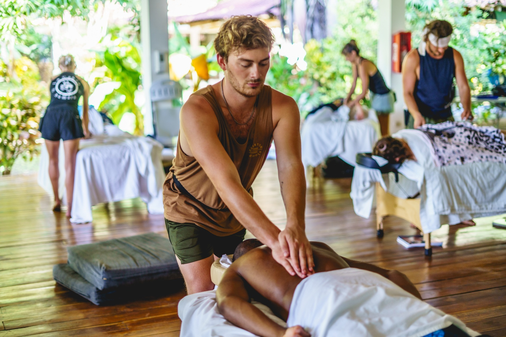

Responsive work
The session changes as your body responds.

Personalized mobile massage
Private in-home sessions in Santa Barbara, with deep tissue, Swedish massage, and cupping incorporated as appropriate.
Book a session →The Approach
His approach is responsive rather than routine-based. Pressure, focus, and technique shift according to what your body needs that day, so the session stays personal from beginning to end.
You do not need to decide whether you need deep tissue, Swedish massage, or cupping before you book. Tell Sage what is going on, what you want from the session, and what feels important that day.
A session may draw from
Focused, deeper-pressure work where appropriate.
Broad, flowing techniques for relaxation and full-body work.
Added when useful and with your consent.
Massage therapist · Santa Barbara · Practicing since 2024
I listen to what you tell me, and I adjust based on what your body needs.
I was drawn to massage because I enjoy working with my hands, understanding the physical body, and helping people feel better in their daily lives. I trained at the Costa Rica School of Massage Therapy in Sámara, Costa Rica, completing their three-month summer intensive and working in the school’s clinic providing massage to local residents.
I’ve been working as a massage therapist since 2024. My approach is responsive rather than routine-based: I pay attention to breathing, tension, tissue response, and the way someone is holding themselves, then adjust the work as the session develops.
Sage also works professionally with PROCOVRY in Santa Barbara and frequently provides hands-on work at local wellness events. Through that work, he has continued building experience with recovery-oriented massage, cupping, scraping, and sports-massage techniques.
CRSMT trained · Practicing since 2024 · Currently practicing at PROCOVRY
Sage offers private mobile massage throughout Santa Barbara. He brings the table and necessary equipment, sets up in your space, and takes everything with him when the session is finished.
◆ Choose a time.
◆ Share what has been bothering you.
◆ He brings the table and takes it from there.
The session changes as your body responds.
Pressure, comfort, boundaries, and priorities stay part of the conversation.
Sage follows what he finds rather than rushing through a predetermined sequence.
Private in-home sessions · Santa Barbara
Choose a 60- or 90-minute appointment and Sage will come to you.
Book a massage →